日本巡る自転車旅 ＞ 紹介
雨の日も、乗れない日も、自転車旅を。
日本巡る自転車旅
自転車旅が好きな人のための、無料のブラウザゲームです。ゲームに慣れていなくても、すぐ遊べます。
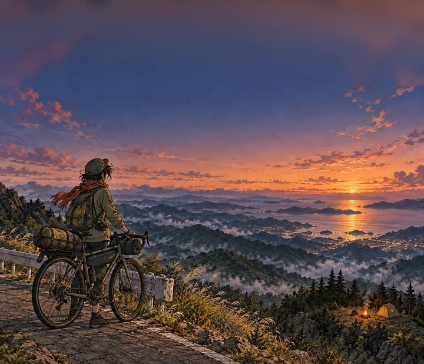
こんな日に
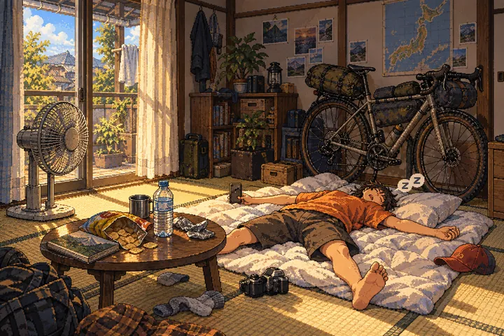
- 雨や雪で乗れない日
- 旅に出られない週末
- 次の旅の計画を考える時間
遊び方
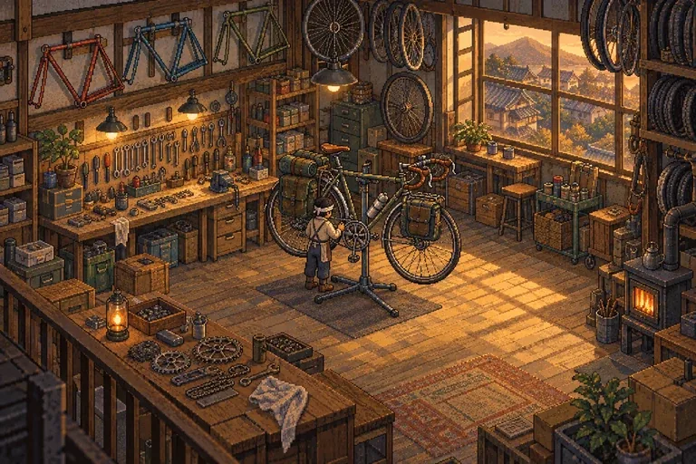
1 装備をそろえる
自転車・テント・衣類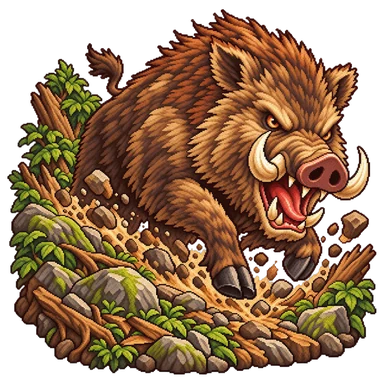
2 旅に出て、試練へ
コマンドを選ぶバトル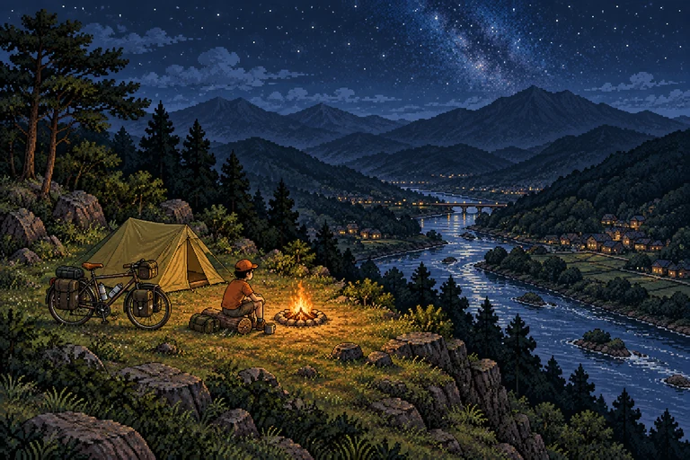
3 キャンプで一夜
写真を撮ってフォロワー増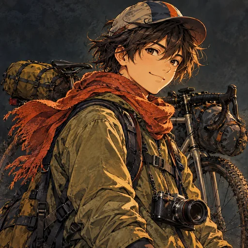
4 全国制覇へ
47都道府県の馴染み宿
特別コースとボス
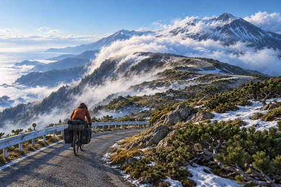
北海道
知床横断道路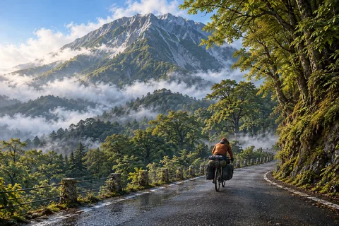
鳥取
大山環状道路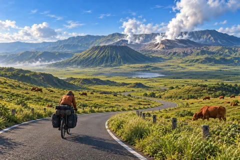
熊本
阿蘇パノラマライン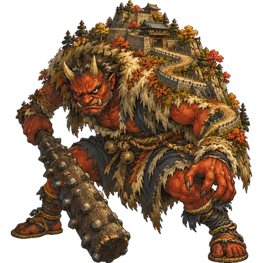
岡山のボス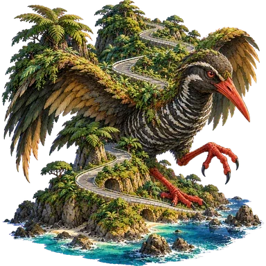
沖縄のボス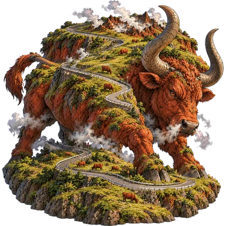
熊本のボス
特別コースは全国25の都道府県にあります。ゲーム内の通行止めは現実と合わせていません。実際の道路の通行可否は、管理者の最新情報で確認してください。
遊べる環境
- ブラウザで遊べます（インストール・登録は不要）
- スマホでもPCでも、無料
- セーブはブラウザ内。ファイル保存もできます
個人制作のゲームです。絵は画像生成AI、コードはAIの支援で作っています。